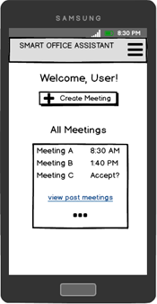
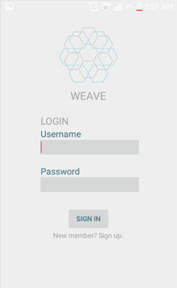

Hi, I'm Kathy Pang.
Welcome to my portfolio! I am a 4th year Informatics Major at UCI specializing in Human-Computer Interaction with an interest in UI/UX design. I am a student, designer, and software engineer.
About
For fun, I wrote for an online fashion blog in the past, Haberdashion. Visit Haberdashion to view my articles.
Projects
- SHARP Smart Office Assistant (In Progress) 
- Lume & Fade Game (In Progress)
- Weave 1.0 
- Disability Center User Research
- Data Visualizations
Role: UI/UX Designer, Developer, Project Manager, Software Engineer
For my 2 quarter long senior design project, I am working in a group of 5 to design implement a proof-of-concept Android application. Collaborating with our sponsor from SHARP Labs of America to create a Smart Office Assistant Application catered to improving the productivity of meetings and the overall organization efficiency.
Role: UI Designer, Web Developer, Storywriter
Mainly designed and developed the website for the marketing side of the game. Lume & Fade is 2D side-scroller game developed from scratch on Unity with a group of 5. It is an adventure platformer where the protagonist falls into a parallel world and attempts to find his way home. Ultimately the player is left with an ethical dilemma at the end.
Role: UI Designer, Developer, Software Engineer
Designed and implemented a prototype for a photo-collaborative storytelling mobile app, Weave 1.0. Worked on both front-end and back-end development using Java in Android Studio with a group of 4. Completed in an Agile environment with sprints over 10 weeks.
Role: UI/UX Designer, User Tester, User Researcher
Worked with the UCI Disability Center to evaluate the usability of their website, conducting surveys, user tests and interviews with a group of 5. Completed a full usability evaluation report with analysis, methods, results and findings.
Used the D3 JavaScript library to create information visualizations throughout the quarter.
Skills
Java • Python • Android • HTML/CSS • UI/UX Design • User Testing • User Research •
MS Office • Adobe Photoshop • Social Media
Relevant Courses
- User Interaction Software
- Human Computer Interaction
- Project in Human-Computer Interaction Requirements
- Intro to Software Engineering
- Software Design I
- Requirements Analysis and Elicitation
- Medical Informatics
- Organizational Information Systems
- Social Analysis of Computerization
- Writing Computer Games
- Project Management